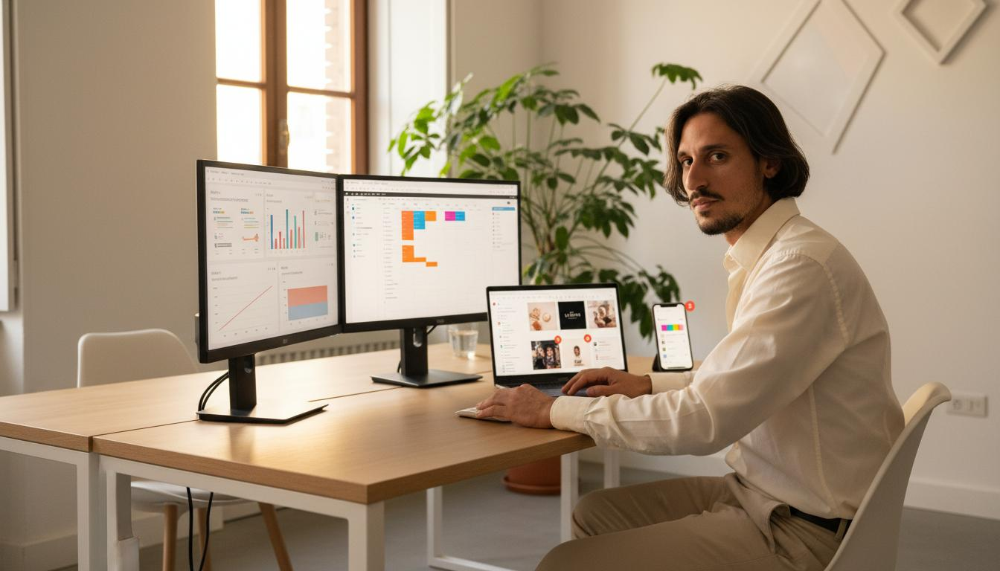

01
Ascolto il contesto
Che si tratti di un professionista o di un team aziendale, parto sempre da domande: cosa funziona già? Dove si perde tempo? Cosa vorreste fare diversamente da lunedì?
"Il problema non è mai che qualcuno non sappia abbastanza. È che spesso sa troppe cose che non serve sapere, e non sa quelle che gli farebbero risparmiare tempo oggi."
Nessun percorso esce da un cassetto. Ogni programma nasce da una conversazione e si modella sulle persone che lo vivranno.
Che si tratti di un professionista o di un team aziendale, parto sempre da domande: cosa funziona già? Dove si perde tempo? Cosa vorreste fare diversamente da lunedì?
Non serve sapere tutto. Serve sapere la cosa giusta per risolvere il problema reale. Trasformo le aree tematiche in obiettivi misurabili e concreti.
Lezioni frontali non esistono nel mio vocabolario. Solo lavoro pratico, strumenti immediati, esercizi sul campo e follow-up per vedere se funziona davvero.
Queste sono le aree su cui ho costruito esperienza concreta. Non sono corsi preconfezionati: sono il terreno su cui progettiamo insieme il tuo percorso.
Costruire una presenza digitale che abbia senso. Non solo "essere sui social", ma capire quali canali servono davvero al proprio pubblico, come costruire un tono di voce riconoscibile e come far convivere contenuti, strumenti e strategia senza impazzire.

Attrarre le persone giuste senza urlare nel vuoto. Dalla comprensione del pubblico alla misurazione dei risultati, passando per strumenti, metriche e campagne che hanno un senso nel contesto reale di chi li usa.
L'AI non è una moda da spiegare a lezione. È uno strumento da integrare nel lavoro quotidiano. Mi concentro sull'uso pratico: come sfruttarla per scrivere meglio, analizzare più in fretta, automatizzare il noioso e liberare tempo per il necessario.
Il problema spesso non è mancanza di tempo, ma troppi passaggi inutili. Analizziamo i flussi di lavoro, identifichiamo i colli di bottiglia e costruiamo automatismi che restano anche quando la formazione è finita.
Perché specificare cosa non faccio è il modo più chiaro per spiegare cosa faccio davvero.
Se devo parlare per ore davanti a una platea silenziosa, preferisco declinare. Lavoriamo insieme, sul vostro materiale, con i vostri strumenti.
Non esiste il "corso di comunicazione digitale standard". Esiste il percorso che costruiamo dopo aver capito chi sei e dove vuoi arrivare.
Il valore misurabile è quello che cambia nel lavoro quotidiano dopo la formazione, non il pezzo di carta che la attesta.
Un'azienda di servizi mi contatta perché il team marketing perde troppo tempo nella produzione di contenuti. Dopo un'ora di conversazione scopriamo che il problema non è la creatività: è che nessuno sa usare gli strumenti AI per accelerare i primi draft. Costruiamo un percorso di 3 incontri: uno su prompt engineering, uno su workflow di revisione con AI, uno su automazione della pubblicazione. Dopo tre settimane il tempo di produzione si è dimezzato.
Questo è solo un esempio. Il tuo percorso sarà diverso, perché il tuo contesto è diverso.
Vuoi aggiornarti, acquisire competenze concrete o semplicemente capire cosa davvero serve nel tuo lavoro? Costruiamo un percorso su misura, anche breve e mirato.
Il tuo team ha bisogno di allinearsi su strumenti, metodi o nuove tecnologie? Progetto percorsi interni calibrati sui processi reali dell'organizzazione.
Collaboro con enti, scuole e associazioni per l'erogazione di percorsi in ambito digitale, anche nell'ambito di programmi finanziati e GOL.
Raccontami il tuo contesto. Troveremo insieme l'area giusta e il modo migliore per esplorarla.
Costruiamo il tuo percorso